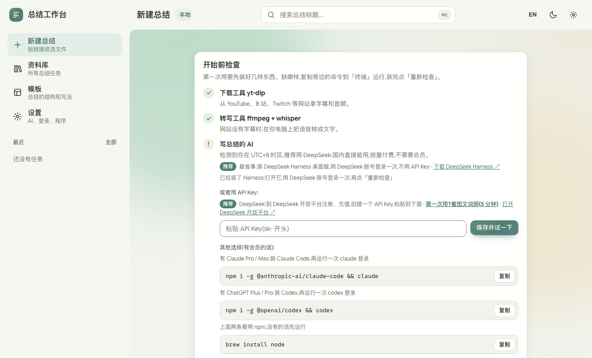
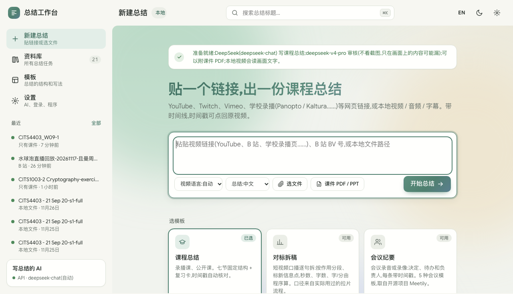
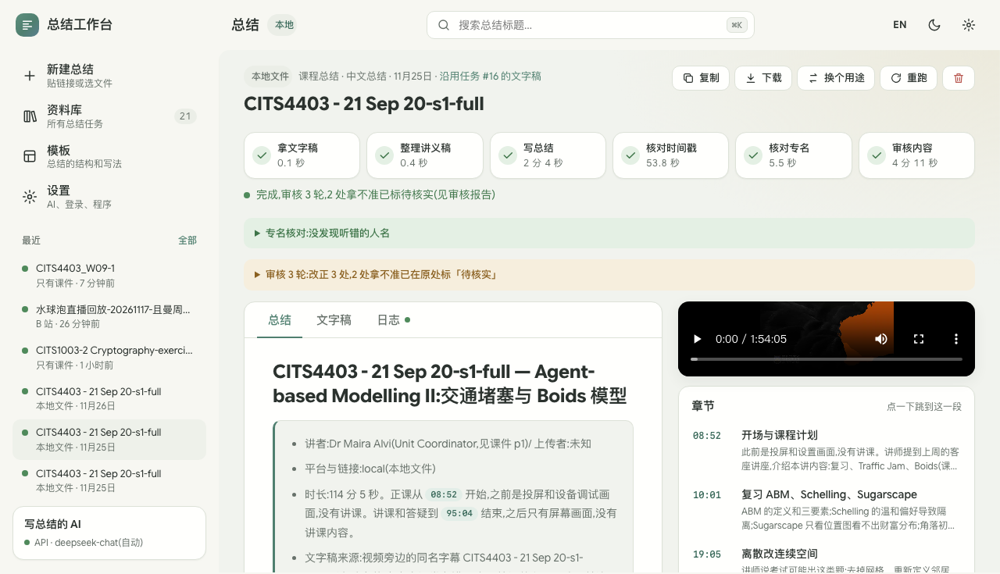

课程总结工作台 · 一步一步使用说明
它能做什么：你给它一个网课或录播课的链接（比如 B 站视频），它会自动帮你整理出一份复习笔记——每一段讲了什么、重点在哪、还有复习用的问答卡。笔记里的每个时间点都能点，一点就跳回视频那一秒。
这份说明怎么看：每一步都分三块——要做你要动手的事，你会看到做完以后屏幕上应该出现什么，注意容易卡住的地方。看到的和说明里一样，就做下一步；不一样，就停下来截图发给发你这个软件的人。
开始之前，请准备好
- 一台电脑（苹果电脑或 Windows 电脑都可以），连着网。
- 电脑的开机密码（安装时要输一次）。
- 一个 DeepSeek 账号（用手机号就能注册），帮你"写笔记"用。
- 大约 40 分钟：第一次安装大部分时间是在下载，只需要第一次这样，以后打开只要几秒。
先分清你的电脑是哪种
| 如果…… | 你的电脑是 | 看哪一部分 |
|---|
| 屏幕左上角有一个苹果标志 | 苹果电脑（Mac） | 第一部分 |
| 屏幕左下角有一个四个方块的 Windows 标志 | Windows 电脑 | 第二部分 |
- 第一部分：苹果电脑怎么装
- 第二部分：Windows 电脑怎么装
- 第三部分：接上帮你写笔记的 AI（DeepSeek）
- 第四部分：第一次用：整理一节课
- 第五部分：以后怎么打开、遇到问题怎么办
第一部分：苹果电脑怎么装
1
把压缩包保存到电脑上
要做在电脑版微信里，找到别人发给你的「课程总结工作台.zip」，点一下它下载。下载完，在这个文件上点右键（触控板用两根手指一起按），选 在 Finder 中显示。
你会看到打开一个文件夹窗口，里面有「课程总结工作台.zip」。
注意如果你是从 GitHub 的「Releases」页面下载的，压缩包在「下载」文件夹里，名字是 lecture-workbench-zh-mac.zip，其他步骤一样。
2
解压，并把文件夹放到桌面
要做双击「课程总结工作台.zip」。
你会看到旁边多出一个叫「课程总结工作台」的文件夹（文件夹图标是蓝色的）。
要做用鼠标按住这个文件夹，拖到屏幕上空白的桌面上，松手。以后都在桌面上找它。
3
第一次打开启动文件（会被系统拦一下，正常）
要做双击打开桌面上的「课程总结工作台」文件夹，找到「启动工作台.command」，双击它。
你会看到苹果电脑弹出一个提示，大意是"Apple 无法验证它是否包含恶意软件"，下面有两个按钮：
未打开"启动工作台.command"Apple 无法验证"启动工作台.command"是否包含可能危害 Mac 安全或泄漏隐私的恶意软件。
移到废纸篓完成
（示意图，不同系统版本文字可能略有不同）
要做点 完成。千万不要点「移到废纸篓」。
注意这是因为这个小软件不是从 App Store 下载的，所以苹果电脑先拦一下。下一步告诉电脑"我信任它"就好，只需要做这一次。
4
在「系统设置」里允许它打开
要做点屏幕左上角的苹果标志，选 系统设置。在左边一栏往下找，点 隐私与安全性。右边往下滚动，滚到「安全性」那一块。
你会看到一行字：「已阻止"启动工作台.command"……」，旁边有一个按钮 仍要打开。
要做点 仍要打开。如果又弹出一个提示，再点里面的 仍要打开 或 打开。要你输入密码时，输入开机密码，点 好。
注意「仍要打开」按钮在你双击后一小时内才会出现。找不到的话，回到第 3 步再双击一次，然后马上来这里找。
5
等它自动安装（黑色窗口）
你会看到弹出一个黑色的窗口（叫「终端」），里面开始一行一行出现文字。第一行是：
== 总结工作台:检查和安装
如果接着出现这一行，说明它发现你在国内，会自动换成国内的下载地址，不用管：
== 连不上 GitHub,改用国内镜像下载(中科大 Homebrew、npmmirror、阿里云 PyPI)
注意这个黑色窗口在用工作台的时候要一直开着，不要关。
6
它问"现在安装吗"，输入 y
你会看到
需要先装 Homebrew(Mac 上装软件用的官方工具,https://brew.sh)。
现在安装吗?过程中要输入一次开机密码 [y/N]
要做在键盘上按一下 y 键，再按 回车（键盘右边那个大的 return / ↵ 键）。
注意电脑以前装过 Homebrew 的话，不会问这一句，直接跳到第 9 步。
7
输入开机密码（输的时候看不到，正常）
你会看到
Password:
要做直接输入你的开机密码，然后按 回车。
注意输密码时屏幕上什么都不会显示，连小圆点都没有，这是正常的，不是键盘坏了。输完直接按回车就行。输错了它会让你再输一次。
8
出现一大段英文，最后让你按回车
你会看到一大段英文，最后一行是：
==> HOMEBREW_BREW_GIT_REMOTE is set to a non-default URL:
https://mirrors.ustc.edu.cn/brew.git will be used as the Homebrew/brew Git remote.
Press RETURN/ENTER to continue or any other key to abort:
要做按一下 回车。
你会看到接着出现 Installing Command Line Tools、Finding available software 这样的字，然后很长时间不动。
注意它在从苹果下载一个叫"命令行开发者工具"的东西，要等 10 到 30 分钟，期间窗口可能好几分钟都没有新字。不要关窗口，不要乱按键，可以去倒杯水。如果弹出一个小窗口问要不要安装"命令行开发者工具"，点 安装，再点 同意。
9
它继续装其他工具
你会看到一行一行出现：
… 安装 uv
… 安装 yt-dlp
… 安装 ffmpeg
… 安装 whisper-cpp
……
== 语音模型(约 1.5 GB,只下载这一次,已经有就跳过)
10% (155 / 1549 MB)
……
✓ 语音模型已就绪
每一样都要下载一会儿，最后还要下载一个约 1.5 GB 的语音模型（会显示 10%、20%……的进度），全部装完大约要 10 到 20 分钟，看网速。继续等，不用操作。
10
装好了：浏览器自动打开工作台
你会看到黑色窗口最后几行是：
== 启动工作台:http://127.0.0.1:8770(关掉这个终端窗口或按 Ctrl+C 就会停)
== 总结工作台: http://127.0.0.1:8770
几秒后，浏览器（Safari 或 Chrome）会自动打开一个新页面，就是工作台。安装完成！接着看第三部分，接上 DeepSeek。
注意窗口里可能有"写总结的 AI 还没有"之类的字，不用管，第三部分会在网页里配好。浏览器没有自动打开的话，自己打开浏览器，在最上面的地址栏输入 127.0.0.1:8770 回车。
第二部分：Windows 电脑怎么装
Windows 版还没在很多电脑上试过，遇到和说明不一样的地方，请截图发给发你软件的人。
1
保存并解压
要做在电脑版微信里下载「课程总结工作台.zip」，在文件上点右键，选 在文件夹中显示。然后在这个 zip 文件上点右键，选 全部解压缩…，再点 解压缩。
你会看到多出一个「课程总结工作台」文件夹，并且自动打开了它。（从 GitHub 下载的是「lecture-workbench-zh-windows.zip」，其他一样。）
注意一定要"全部解压缩"。直接双击 zip 看到的只是预览，在预览里双击启动会失败。
2
双击「启动工作台.bat」
要做在文件夹里双击「启动工作台.bat」（有的电脑不显示 .bat，看到「启动工作台」、图标像一个齿轮窗口的就是它）。
你会看到可能弹出蓝色提示「Windows 已保护你的电脑」。
要做点提示里的小字 更多信息，再点出现的按钮 仍要运行。
3
等它自动安装
你会看到一个黑色窗口，一行一行地安装东西，还会下载一个约 1.6 GB 的语音模型。可能会弹出"你要允许此应用对你的设备进行更改吗"，点 是。
注意整个过程可能要 20 到 40 分钟，黑色窗口不要关。
4
浏览器自动打开工作台
你会看到浏览器打开了工作台页面。安装完成，接着看第三部分。
第三部分：接上帮你写笔记的 AI（DeepSeek）
工作台负责下载视频、把声音转成文字、核对时间；"写笔记"这一步要借 DeepSeek（国内的 AI，和 ChatGPT 类似）。打开工作台后，页面最上面有一块「开始前检查」，告诉你还差什么：

图：第一次打开时的「开始前检查」。前两项打了勾，说明下载和转写工具都装好了；第三项「写总结的 AI」还没配。
有两种接法，任选一种。推荐第一种，不用碰"API Key"这种东西。
接法一（推荐）：装 DeepSeek Harness，登录一次
要求：苹果电脑需要是 2020 年以后的 M 系列芯片（点屏幕左上角的苹果标志 → 关于本机，看"芯片"一行写着 Apple M1/M2/M3/M4…）；或者 64 位 Windows。老款 Intel 芯片的苹果电脑用接法二。
1
下载 DeepSeek Harness
要做在「开始前检查」里点蓝色的 下载 DeepSeek Harness ↗，在打开的官网页面上点下载（苹果电脑选 macOS，Windows 电脑选 Windows）。
2
安装（苹果电脑这一步最容易做错）
要做（苹果）双击下载好的文件（名字像「DeepSeek Harness 0.2.2…dmg」）。
你会看到一个窗口，左边是「DeepSeek Harness」图标，右边是一个「Applications」文件夹。
要做把左边的 DeepSeek Harness 图标拖到右边的 Applications 文件夹上，松手，等它复制完（约 1 GB，一两分钟）。
注意不要直接在这个窗口里双击打开 Harness！那样它没有真正装进电脑，工作台会找不到它。拖完以后，在 Finder 左边栏点安装盘名字旁边的 ⏏ 把它弹出。
要做（Windows）双击下载好的 .exe 安装程序，一路点「下一步」装好。
3
打开 Harness，用 DeepSeek 账号登录
要做苹果电脑：打开 Finder 左边栏的「应用程序」，双击 DeepSeek Harness。按它的提示，用手机号登录 DeepSeek 账号。
你会看到登录成功后进入 Harness 的聊天界面。登录好就可以把它关掉了，以后不用开着它。
4
回到工作台，点「重新检查」
要做回到浏览器的工作台页面，点「开始前检查」下面绿色的 重新检查。
你会看到那一大块检查变成一行绿色的字：「准备就绪:DeepSeek Harness 写课程总结……」。就可以用了！
接法二：用 API Key（速度最快；老款苹果电脑、装不了 Harness 时也用它）
API Key 是 DeepSeek 开放平台给你的一串"钥匙"，以 sk- 开头。工作台拿着它直接找 DeepSeek 写笔记，不用装别的软件，速度也最快（写一节 1.5 小时的课只要半分钟左右；用 Harness 要四五分钟）。代价是要先充一点钱，按用量扣费，一节 1.5 小时的课大约两三毛钱。
准备好：一个手机号（登录用），支付宝或微信（充值用），工作台已经打开。
1
打开 DeepSeek 开放平台，登录
要做在浏览器地址栏输入 platform.deepseek.com，回车。用手机号收验证码登录；没有账号的话，第一次登录就自动注册了。
注意这里是"开放平台"，和手机上免费聊天的 DeepSeek App 是两回事。App 里聊天不花钱，开放平台按用量扣费。
2
充一小笔钱
要做点左边菜单的「充值」，选金额，用支付宝或微信付款。第一次充 10 元就够用很久。
注意如果页面要求先做实名认证，按提示填写就行，这是平台的要求，和工作台无关。
3
创建 API Key，马上复制
要做点左边菜单的「API keys」→「创建 API key」，名字随便写（比如"总结工作台"），点创建。
你会看到弹出一串 sk- 开头的字符，这就是 Key。
注意这串字符只显示这一次，关掉就再也看不到了。马上点旁边的复制按钮。没复制到也不要紧：把它删掉，再创建一个。
4
粘贴到工作台
要做回到工作台页面，在最上面「开始前检查」里找到 DeepSeek 那一项的输入框，粘贴 Key（苹果电脑按 ⌘+V，Windows 按 Ctrl+V），点 保存并试一下。
你会看到工作台先试一下这把 Key 能不能用，能用才保存，然后出现绿色的「准备就绪:DeepSeek … 写课程总结」。就可以用了！
注意Key 只存在你自己电脑上，不要发给别人。万一泄露，到开放平台把它删掉，再建一把新的。
两种都接上了也没关系，工作台会优先用 API Key（更快）。花了多少钱，在开放平台的「用量信息」里能看到。更多图文说明：打开文件夹里的「如何接入DeepSeek.html」，或点「开始前检查」里的 第一次用?看图文说明(5 分钟)。
第四部分：第一次用：整理一节课

图：准备好以后的工作台首页。最上面一行绿字表示可以用了；中间的大框是贴链接的地方；右边绿色按钮是「开始总结」。
1
复制课程视频的链接
要做在浏览器里打开你要整理的那节课（比如 B 站视频），点浏览器最上面的地址栏，按 ⌘ Command + C（Windows 是 Ctrl + C）复制。在 B 站手机 App 里也可以点「分享 → 复制链接」，再发到电脑上。
注意只有 B 站视频的话，只复制那串以 BV 开头的编号（比如 BV1hDsg6LETy）也可以。
2
粘贴到工作台，点「开始总结」
要做点工作台中间的大框，按 ⌘ Command + V（Windows 是 Ctrl + V）粘贴，然后点右边绿色的 开始总结 →。
注意如果这节课有课件（PPT 或 PDF），可以先点 课件 PDF / PPT 选上它，笔记会更准，还会标出第几页。只有课件、没有视频也行：不贴链接，只选课件，直接点开始。
3
等它整理（第一次要多等一会儿）
你会看到页面上方一排小方块，依次打勾：拿文字稿 → 整理讲义稿 → 写总结 → 核对时间戳 → 核对专名 → 审核内容。
注意一节 1 小时的课，一般 10 到 20 分钟整理完（视频越短越快）。可以先去做别的事，浏览器标签上出现 ✓ 就是好了。
4
看笔记

图：整理好的一节课。上面一排全打勾；左边是笔记；右边是视频和「章节」，点任意一章，视频就跳到那里。
要做往下滚动看笔记。笔记里的时间（比如 19:05）可以点，点了视频就跳到那一秒。
注意笔记里写着「待核实」的地方，是 AI 拿不准、怕写错的地方，复习时对照一下原视频或课件。
想存下来或发给别人点标题下面的 导出，选一种：PDF（打印窗口里把「目标打印机」选成「存储为 PDF」再保存，最适合发给别人或打印）、Word（用 Word / WPS 打开继续改）、Markdown（放进 Obsidian、Notion 这类笔记软件）。
5
把笔记存下来
要做点右上角的 复制，就能粘贴到备忘录、微信、Word 或 Obsidian 里；点 下载 会存成一个文件。以前整理过的课，都在左边「资料库」里能找到。
第五部分：以后怎么打开、遇到问题怎么办
以后怎么打开
1
双击同一个启动文件
要做打开桌面上的「课程总结工作台」文件夹，双击「启动工作台」（苹果电脑是 .command，Windows 是 .bat）。不会再安装一遍，几秒后浏览器就打开工作台。
注意用完想关掉：直接关掉那个黑色窗口就行。
遇到问题怎么办
| 你看到的 | 怎么办 |
|---|
| 双击启动文件，提示"无法打开 / 无法验证" | 按第一部分第 3、4 步：点「完成」，再去「系统设置 → 隐私与安全性」点「仍要打开」。 |
| 「隐私与安全性」里找不到「仍要打开」 | 回去再双击一次启动文件，然后一小时内去找。 |
| 黑色窗口里输入密码，屏幕上没反应 | 正常，输入时就是看不到。输完按回车。 |
| 黑色窗口很久不动（10 分钟以上） | 如果最后一行是 Finding available software：正在下载开发者工具，继续等，最多 30 分钟。超过 30 分钟，关掉窗口，重新双击启动文件再试。 |
| 黑色窗口里出现红字、"错误"、"Error" | 把整个窗口拍照或截图，发给发你软件的人。大多数是网络问题，重新双击启动文件常常就好了。 |
| 浏览器没有自动打开 | 自己打开浏览器，在地址栏输入 127.0.0.1:8770，按回车。 |
| 网页打不开，显示"无法连接" | 黑色窗口被关掉了。重新双击启动文件。 |
| 「开始前检查」里 DeepSeek Harness 显示"不可用" | 大多是 Harness 没拖进「应用程序」文件夹（看第三部分第 2 步），或者还没登录。弄好后点「重新检查」。 |
| 提示"Key 不对"或"余额不足" | Key 不对：重新复制粘贴一次；余额不足：去 DeepSeek 开放平台充值，回来点「重跑」。 |
| 整理到一半显示失败（红色） | 点右上角 重跑。还是失败就截图发给发你软件的人。 |
| 学校录播要登录才能看，链接贴进去失败 | 在工作台左边点「设置 → 网站登录」，选你平时登录学校网站用的浏览器；还不行就把视频下载下来，点「选文件」选它。 |
小提示
- 视频和转成的文字都只在你自己电脑上，只有文字会发给 DeepSeek 写笔记。
- 只整理你自己有权看的课程视频，不要把下载的视频再发给别人。
- 遇到任何看不懂的，拍照或截图发给发你软件的人，比用文字描述清楚得多。